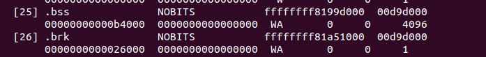

Kernel initialization. Part 6.
Architecture-specific initialization, again...
In the previous part we saw architecture-specific (x86_64 in our case) initialization stuff from the arch/x86/kernel/setup.c and finished on x86_configure_nx function which sets the _PAGE_NX flag depends on support of NX bit. As I wrote before setup_arch function and start_kernel are very big, so in this and in the next part we will continue to learn about architecture-specific initialization process. The next function after x86_configure_nx is parse_early_param. This function is defined in the init/main.c and as you can understand from its name, this function parses kernel command line and setups different services depends on the given parameters (all kernel command line parameters you can find are in the Documentation/kernel-parameters.txt). You may remember how we setup earlyprintk in the earliest part. On the early stage we looked for kernel parameters and their value with the cmdline_find_option function and __cmdline_find_option, __cmdline_find_option_bool helpers from the arch/x86/boot/cmdline.c. There we're in the generic kernel part which does not depend on architecture and here we use another approach. If you are reading Linux kernel source code, you already note calls like this:
early_param("gbpages", parse_direct_gbpages_on);
early_param macro takes two parameters:
- command line parameter name;
- function which will be called if given parameter is passed.
and defined as:
#define early_param(str, fn) \
__setup_param(str, fn, fn, 1)
in the include/linux/init.h. As you can see early_param macro just makes call of the __setup_param macro:
#define __setup_param(str, unique_id, fn, early) \
static const char __setup_str_##unique_id[] __initconst \
__aligned(1) = str; \
static struct obs_kernel_param __setup_##unique_id \
__used __section(.init.setup) \
__attribute__((aligned((sizeof(long))))) \
= { __setup_str_##unique_id, fn, early }
This macro defines __setup_str_*_id variable (where * depends on given function name) and assigns it to the given command line parameter name. In the next line we can see definition of the __setup_* variable which type is obs_kernel_param and its initialization. obs_kernel_param structure defined as:
struct obs_kernel_param {
const char *str;
int (*setup_func)(char *);
int early;
};
and contains three fields:
- name of the kernel parameter;
- function which setups something depend on parameter;
- field determines is parameter early (1) or not (0).
Note that __set_param macro defines with __section(.init.setup) attribute. It means that all __setup_str_* will be placed in the .init.setup section, moreover, as we can see in the include/asm-generic/vmlinux.lds.h, they will be placed between __setup_start and __setup_end:
#define INIT_SETUP(initsetup_align) \
. = ALIGN(initsetup_align); \
VMLINUX_SYMBOL(__setup_start) = .; \
*(.init.setup) \
VMLINUX_SYMBOL(__setup_end) = .;
Now we know how parameters are defined, let's back to the parse_early_param implementation:
void __init parse_early_param(void)
{
static int done __initdata;
static char tmp_cmdline[COMMAND_LINE_SIZE] __initdata;
if (done)
return;
/* All fall through to do_early_param. */
strlcpy(tmp_cmdline, boot_command_line, COMMAND_LINE_SIZE);
parse_early_options(tmp_cmdline);
done = 1;
}
The parse_early_param function defines two static variables. First done check that parse_early_param already called and the second is temporary storage for kernel command line. After this we copy boot_command_line to the temporary command line which we just defined and call the parse_early_options function from the same source code main.c file. parse_early_options calls the parse_args function from the kernel/params.c where parse_args parses given command line and calls do_early_param function. This function goes from the __setup_start to __setup_end, and calls the function from the obs_kernel_param if a parameter is early. After this all services which are depend on early command line parameters were setup and the next call after the parse_early_param is x86_report_nx. As I wrote in the beginning of this part, we already set NX-bit with the x86_configure_nx. The next x86_report_nx function from the arch/x86/mm/setup_nx.c just prints information about the NX. Note that we call x86_report_nx not right after the x86_configure_nx, but after the call of the parse_early_param. The answer is simple: we call it after the parse_early_param because the kernel support noexec parameter:
noexec [X86]
On X86-32 available only on PAE configured kernels.
noexec=on: enable non-executable mappings (default)
noexec=off: disable non-executable mappings
We can see it in the booting time:

After this we can see call of the:
memblock_x86_reserve_range_setup_data();
function. This function is defined in the same arch/x86/kernel/setup.c source code file and remaps memory for the setup_data and reserved memory block for the setup_data (more about setup_data you can read in the previous part and about ioremap and memblock you can read in the Linux kernel memory management).
In the next step we can see following conditional statement:
if (acpi_mps_check()) {
#ifdef CONFIG_X86_LOCAL_APIC
disable_apic = 1;
#endif
setup_clear_cpu_cap(X86_FEATURE_APIC);
}
The first acpi_mps_check function from the arch/x86/kernel/acpi/boot.c depends on CONFIG_X86_LOCAL_APIC and CONFIG_x86_MPPARSE configuration options:
int __init acpi_mps_check(void)
{
#if defined(CONFIG_X86_LOCAL_APIC) && !defined(CONFIG_X86_MPPARSE)
/* mptable code is not built-in*/
if (acpi_disabled || acpi_noirq) {
printk(KERN_WARNING "MPS support code is not built-in.\n"
"Using acpi=off or acpi=noirq or pci=noacpi "
"may have problem\n");
return 1;
}
#endif
return 0;
}
It checks the built-in MPS or MultiProcessor Specification table. If CONFIG_X86_LOCAL_APIC is set and CONFIG_x86_MPPARSE is not set, acpi_mps_check prints warning message if the one of the command line options: acpi=off, acpi=noirq or pci=noacpi passed to the kernel. If acpi_mps_check returns 1 it means that we disable local APIC and clear X86_FEATURE_APIC bit in the of the current CPU with the setup_clear_cpu_cap macro. (more about CPU mask you can read in the CPU masks).
Early PCI dump
In the next step we make a dump of the PCI devices with the following code:
#ifdef CONFIG_PCI
if (pci_early_dump_regs)
early_dump_pci_devices();
#endif
pci_early_dump_regs variable defined in the arch/x86/pci/common.c and its value depends on the kernel command line parameter: pci=earlydump. We can find definition of this parameter in the drivers/pci/pci.c:
early_param("pci", pci_setup);
pci_setup function gets the string after the pci= and analyzes it. This function calls pcibios_setup which defined as __weak in the drivers/pci/pci.c and every architecture defines the same function which overrides __weak analog. For example x86_64 architecture-dependent version is in the arch/x86/pci/common.c:
char *__init pcibios_setup(char *str) {
...
...
...
} else if (!strcmp(str, "earlydump")) {
pci_early_dump_regs = 1;
return NULL;
}
...
...
...
}
So, if CONFIG_PCI option is set and we passed pci=earlydump option to the kernel command line, next function which will be called - early_dump_pci_devices from the arch/x86/pci/early.c. This function checks noearly PCI parameter with:
if (!early_pci_allowed())
return;
and returns if it was passed. Each PCI domain can host up to 256 buses and each bus hosts up to 32 devices. So, we goes in a loop:
for (bus = 0; bus < 256; bus++) {
for (slot = 0; slot < 32; slot++) {
for (func = 0; func < 8; func++) {
...
...
...
}
}
}
and read the pci config with the read_pci_config function.
That's all. We will not go deep in the pci details, but will see more details in the special Drivers/PCI part.
Finish with memory parsing
After the early_dump_pci_devices, there are a couple of function related with available memory and e820 which we collected in the First steps in the kernel setup part:
/* update the e820_saved too */
e820_reserve_setup_data();
finish_e820_parsing();
...
...
...
e820_add_kernel_range();
trim_bios_range(void);
max_pfn = e820_end_of_ram_pfn();
early_reserve_e820_mpc_new();
Let's look at it. As you can see the first function is e820_reserve_setup_data. This function does almost the same as memblock_x86_reserve_range_setup_data which we saw above, but it also calls e820_update_range which adds new regions to the e820map with the given type which is E820_RESERVED_KERN in our case. The next function is finish_e820_parsing which sanitizes e820map with the sanitize_e820_map function. Besides this two functions we can see a couple of functions related to the e820. You can see it in the listing above. e820_add_kernel_range function takes the physical address of the kernel start and end:
u64 start = __pa_symbol(_text);
u64 size = __pa_symbol(_end) - start;
checks that .text .data and .bss marked as E820RAM in the e820map and prints the warning message if not. The next function trm_bios_range update first 4096 bytes in e820Map as E820_RESERVED and sanitizes it again with the call of the sanitize_e820_map. After this we get the last page frame number with the call of the e820_end_of_ram_pfn function. Every memory page has a unique number - Page frame number and e820_end_of_ram_pfn function returns the maximum with the call of the e820_end_pfn:
unsigned long __init e820_end_of_ram_pfn(void)
{
return e820_end_pfn(MAX_ARCH_PFN);
}
where e820_end_pfn takes maximum page frame number on the certain architecture (MAX_ARCH_PFN is 0x400000000 for x86_64). In the e820_end_pfn we go through the all e820 slots and check that e820 entry has E820_RAM or E820_PRAM type because we calculate page frame numbers only for these types, gets the base address and end address of the page frame number for the current e820 entry and makes some checks for these addresses:
for (i = 0; i < e820.nr_map; i++) {
struct e820entry *ei = &e820.map[i];
unsigned long start_pfn;
unsigned long end_pfn;
if (ei->type != E820_RAM && ei->type != E820_PRAM)
continue;
start_pfn = ei->addr >> PAGE_SHIFT;
end_pfn = (ei->addr + ei->size) >> PAGE_SHIFT;
if (start_pfn >= limit_pfn)
continue;
if (end_pfn > limit_pfn) {
last_pfn = limit_pfn;
break;
}
if (end_pfn > last_pfn)
last_pfn = end_pfn;
}
if (last_pfn > max_arch_pfn)
last_pfn = max_arch_pfn;
printk(KERN_INFO "e820: last_pfn = %#lx max_arch_pfn = %#lx\n",
last_pfn, max_arch_pfn);
return last_pfn;
After this we check that last_pfn which we got in the loop is not greater that maximum page frame number for the certain architecture (x86_64 in our case), print information about last page frame number and return it. We can see the last_pfn in the dmesg output:
...
[ 0.000000] e820: last_pfn = 0x41f000 max_arch_pfn = 0x400000000
...
After this, as we have calculated the biggest page frame number, we calculate max_low_pfn which is the biggest page frame number in the low memory or below first 4 gigabytes. If installed more than 4 gigabytes of RAM, max_low_pfn will be result of the e820_end_of_low_ram_pfn function which does the same e820_end_of_ram_pfn but with 4 gigabytes limit, in other way max_low_pfn will be the same as max_pfn:
if (max_pfn > (1UL<<(32 - PAGE_SHIFT)))
max_low_pfn = e820_end_of_low_ram_pfn();
else
max_low_pfn = max_pfn;
high_memory = (void *)__va(max_pfn * PAGE_SIZE - 1) + 1;
Next we calculate high_memory (defines the upper bound on direct map memory) with __va macro which returns a virtual address by the given physical memory.
DMI scanning
The next step after manipulations with different memory regions and e820 slots is collecting information about computer. We will get all information with the Desktop Management Interface and following functions:
dmi_scan_machine();
dmi_memdev_walk();
First is dmi_scan_machine defined in the drivers/firmware/dmi_scan.c. This function goes through the System Management BIOS structures and extracts information. There are two ways specified to gain access to the SMBIOS table: get the pointer to the SMBIOS table from the EFI's configuration table and scanning the physical memory between 0xF0000 and 0xFFFFF addresses, 0x10000 bytes totally. Let's look on the second approach. dmi_scan_machine function remaps memory addresses start from 0xF0000 to 0xFFFFF with size of 0x10000 bytes with the dmi_early_remap which just expands to the early_ioremap:
void __init dmi_scan_machine(void)
{
char __iomem *p, *q;
char buf[32];
...
...
...
p = dmi_early_remap(0xF0000, 0x10000);
if (p == NULL)
goto error;
and iterates over all DMI header address and find search _SM_ string:
memset(buf, 0, 16);
for (q = p; q < p + 0x10000; q += 16) {
memcpy_fromio(buf + 16, q, 16);
if (!dmi_smbios3_present(buf) || !dmi_present(buf)) {
dmi_available = 1;
dmi_early_unmap(p, 0x10000);
goto out;
}
memcpy(buf, buf + 16, 16);
}
_SM_ string must be between 000F0000h and 0x000FFFFF. Here we copy 16 bytes to the buf with memcpy_fromio which is the same memcpy and execute dmi_smbios3_present and dmi_present on the buffer. These functions check that first 4 bytes is _SM_ string, get SMBIOS version and gets _DMI_ attributes as DMI structure table length, table address and etc... After one of these functions finish, you will see the result of it in the dmesg output:
[ 0.000000] SMBIOS 2.7 present.
[ 0.000000] DMI: Gigabyte Technology Co., Ltd. Z97X-UD5H-BK/Z97X-UD5H-BK, BIOS F6 06/17/2014
In the end of the dmi_scan_machine, we unmap the previously remapped memory:
dmi_early_unmap(p, 0x10000);
The second function is - dmi_memdev_walk. As you can understand it goes over memory devices. Let's look on it:
void __init dmi_memdev_walk(void)
{
if (!dmi_available)
return;
if (dmi_walk_early(count_mem_devices) == 0 && dmi_memdev_nr) {
dmi_memdev = dmi_alloc(sizeof(*dmi_memdev) * dmi_memdev_nr);
if (dmi_memdev)
dmi_walk_early(save_mem_devices);
}
}
It checks that DMI available (we got it in the previous function - dmi_scan_machine) and collects information about memory devices with dmi_walk_early and dmi_alloc which defined as:
#ifdef CONFIG_DMI
RESERVE_BRK(dmi_alloc, 65536);
#endif
RESERVE_BRK defined in the arch/x86/include/asm/setup.h and reserves space with given size in the brk section.
init_hypervisor_platform();
x86_init.resources.probe_roms();
insert_resource(&iomem_resource, &code_resource);
insert_resource(&iomem_resource, &data_resource);
insert_resource(&iomem_resource, &bss_resource);
early_gart_iommu_check();
SMP config
The next step is parsing of the SMP configuration. We do it with the call of the find_smp_config function which just calls function:
static inline void find_smp_config(void)
{
x86_init.mpparse.find_smp_config();
}
inside. x86_init.mpparse.find_smp_config is the default_find_smp_config function from the arch/x86/kernel/mpparse.c. In the default_find_smp_config function we are scanning a couple of memory regions for SMP config and return if they are found:
if (smp_scan_config(0x0, 0x400) ||
smp_scan_config(639 * 0x400, 0x400) ||
smp_scan_config(0xF0000, 0x10000))
return;
First of all smp_scan_config function defines a couple of variables:
unsigned int *bp = phys_to_virt(base);
struct mpf_intel *mpf;
First is virtual address of the memory region where we will scan SMP config, second is the pointer to the mpf_intel structure. Let's try to understand what is it mpf_intel. All information stores in the multiprocessor configuration data structure. mpf_intel presents this structure and looks:
struct mpf_intel {
char signature[4];
unsigned int physptr;
unsigned char length;
unsigned char specification;
unsigned char checksum;
unsigned char feature1;
unsigned char feature2;
unsigned char feature3;
unsigned char feature4;
unsigned char feature5;
};
As we can read in the documentation - one of the main functions of the system BIOS is to construct the MP floating pointer structure and the MP configuration table. And operating system must have access to this information about the multiprocessor configuration and mpf_intel stores the physical address (look at second parameter) of the multiprocessor configuration table. So, smp_scan_config going in a loop through the given memory range and tries to find MP floating pointer structure there. It checks that current byte points to the SMP signature, checks checksum, checks if mpf->specification is 1 or 4(it must be 1 or 4 by specification) in the loop:
while (length > 0) {
if ((*bp == SMP_MAGIC_IDENT) &&
(mpf->length == 1) &&
!mpf_checksum((unsigned char *)bp, 16) &&
((mpf->specification == 1)
|| (mpf->specification == 4))) {
mem = virt_to_phys(mpf);
memblock_reserve(mem, sizeof(*mpf));
if (mpf->physptr)
smp_reserve_memory(mpf);
}
}
reserves given memory block if search is successful with memblock_reserve and reserves physical address of the multiprocessor configuration table. You can find documentation about this in the - MultiProcessor Specification. You can read More details in the special part about SMP.
Additional early memory initialization routines
In the next step of the setup_arch we can see the call of the early_alloc_pgt_buf function which allocates the page table buffer for early stage. The page table buffer will be placed in the brk area. Let's look on its implementation:
void __init early_alloc_pgt_buf(void)
{
unsigned long tables = INIT_PGT_BUF_SIZE;
phys_addr_t base;
base = __pa(extend_brk(tables, PAGE_SIZE));
pgt_buf_start = base >> PAGE_SHIFT;
pgt_buf_end = pgt_buf_start;
pgt_buf_top = pgt_buf_start + (tables >> PAGE_SHIFT);
}
First of all it get the size of the page table buffer, it will be INIT_PGT_BUF_SIZE which is (6 * PAGE_SIZE) in the current Linux kernel 4.0. As we got the size of the page table buffer, we call extend_brk function with two parameters: size and align. As you can understand from its name, this function extends the brk area. As we can see in the linux kernel linker script brk is in memory right after the BSS:
. = ALIGN(PAGE_SIZE);
.brk : AT(ADDR(.brk) - LOAD_OFFSET) {
__brk_base = .;
. += 64 * 1024; /* 64k alignment slop space */
*(.brk_reservation) /* areas brk users have reserved */
__brk_limit = .;
}
Or we can find it with readelf util:

After that we got physical address of the new brk with the __pa macro, we calculate the base address and the end of the page table buffer. In the next step as we got page table buffer, we reserve memory block for the brk area with the reserve_brk function:
static void __init reserve_brk(void)
{
if (_brk_end > _brk_start)
memblock_reserve(__pa_symbol(_brk_start),
_brk_end - _brk_start);
_brk_start = 0;
}
Note that in the end of the reserve_brk, we set brk_start to zero, because after this we will not allocate it anymore. The next step after reserving memory block for the brk, we need to unmap out-of-range memory areas in the kernel mapping with the cleanup_highmap function. Remember that kernel mapping is __START_KERNEL_map and _end - _text or level2_kernel_pgt maps the kernel _text, data and bss. In the start of the clean_high_map we define these parameters:
unsigned long vaddr = __START_KERNEL_map;
unsigned long end = roundup((unsigned long)_end, PMD_SIZE) - 1;
pmd_t *pmd = level2_kernel_pgt;
pmd_t *last_pmd = pmd + PTRS_PER_PMD;
Now, as we defined start and end of the kernel mapping, we go in the loop through the all kernel page middle directory entries and clean entries which are not between _text and end:
for (; pmd < last_pmd; pmd++, vaddr += PMD_SIZE) {
if (pmd_none(*pmd))
continue;
if (vaddr < (unsigned long) _text || vaddr > end)
set_pmd(pmd, __pmd(0));
}
After this we set the limit for the memblock allocation with the memblock_set_current_limit function (read more about memblock you can in the Linux kernel memory management Part 2), it will be ISA_END_ADDRESS or 0x100000 and fill the memblock information according to e820 with the call of the memblock_x86_fill function. You can see the result of this function in the kernel initialization time:
MEMBLOCK configuration:
memory size = 0x1fff7ec00 reserved size = 0x1e30000
memory.cnt = 0x3
memory[0x0] [0x00000000001000-0x0000000009efff], 0x9e000 bytes flags: 0x0
memory[0x1] [0x00000000100000-0x000000bffdffff], 0xbfee0000 bytes flags: 0x0
memory[0x2] [0x00000100000000-0x0000023fffffff], 0x140000000 bytes flags: 0x0
reserved.cnt = 0x3
reserved[0x0] [0x0000000009f000-0x000000000fffff], 0x61000 bytes flags: 0x0
reserved[0x1] [0x00000001000000-0x00000001a57fff], 0xa58000 bytes flags: 0x0
reserved[0x2] [0x0000007ec89000-0x0000007fffffff], 0x1377000 bytes flags: 0x0
The rest functions after the memblock_x86_fill are: early_reserve_e820_mpc_new allocates additional slots in the e820map for MultiProcessor Specification table, reserve_real_mode - reserves low memory from 0x0 to 1 megabyte for the trampoline to the real mode (for rebooting, etc.), trim_platform_memory_ranges - trims certain memory regions started from 0x20050000, 0x20110000, etc. these regions must be excluded because Sandy Bridge has problems with these regions, trim_low_memory_range reserves the first 4 kilobyte page in memblock, init_mem_mapping function reconstructs direct memory mapping and setups the direct mapping of the physical memory at PAGE_OFFSET, early_trap_pf_init setups #PF handler (we will look on it in the chapter about interrupts) and setup_real_mode function setups trampoline to the real mode code.
That's all. You can note that this part will not cover all functions which are in the setup_arch (like early_gart_iommu_check, mtrr initialization, etc.). As I already wrote many times, setup_arch is big, and Linux kernel is big. That's why I can't cover every line in the linux kernel. I don't think that we missed something important, but you can say something like: each line of code is important. Yes, it's true, but I missed them anyway, because I think that it is not realistic to cover full linux kernel. Anyway we will often return to the idea that we have already seen, and if something is unfamiliar, we will cover this theme.
Conclusion
It is the end of the sixth part about Linux kernel initialization process. In this part we continued to dive in the setup_arch function again and it was long part, but we are not finished with it. Yes, setup_arch is big, hope that next part will be the last part about this function.
If you have any questions or suggestions write me a comment or ping me at twitter.
Please note that English is not my first language, And I am really sorry for any inconvenience. If you find any mistakes please send me PR to linux-insides.